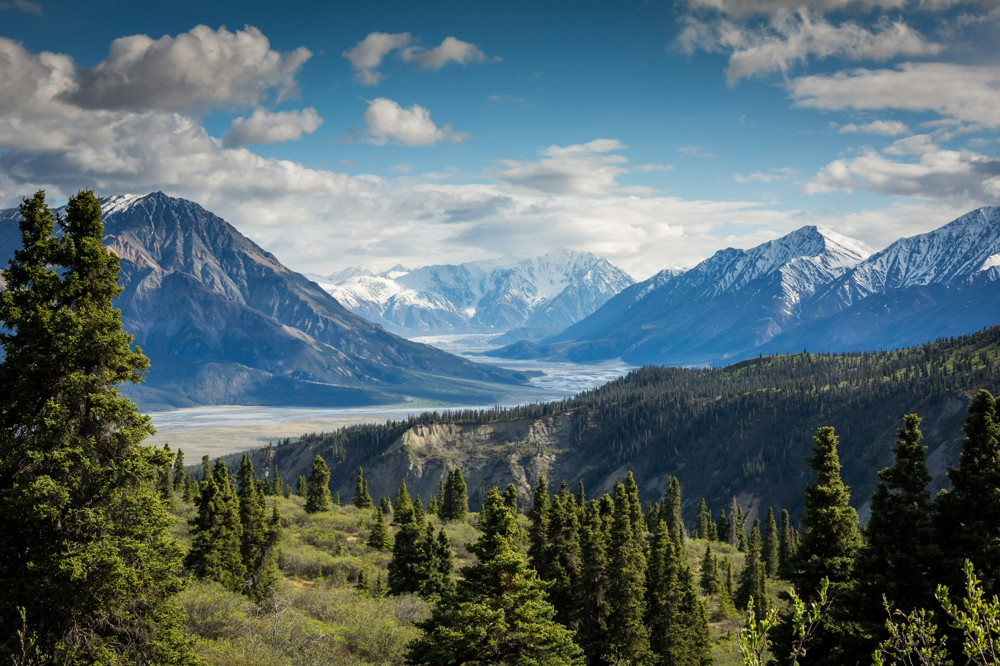

Wild Still
Ruch / rytm / spojrzenie z bliska
WIDEO CC0 · STUDIUM DEMO
To tempo, napięcie i ten jeden moment,
który zostaje z Tobą na dłużej.
Montaż. Kolor. Dźwięk.
Jeden kadr za długo — i tracisz napięcie.
Jedno cięcie we właściwym momencie — i masz historię.
Właśnie tych momentów szukam.
Ruch / rytm / spojrzenie z bliska
WIDEO CC0 · STUDIUM DEMOOddech / przestrzeń / światło
KONCEPCJA WIZUALNACisza / kontrast / atmosfera
KONCEPCJA WIZUALNAAutorskie koncepcje prezentacji na materiałach ilustracyjnych. To nie są zlecenia komercyjne ani portfolio prawdziwych klientów.
Ten sam materiał. Kolejne decyzje.
Przewiń dalej, aby przejść przez obraz klatka po klatce.
Zaczynam od obserwacji. Szukam gestu, ruchu i miejsca na historię.
Surowy materiał
Aleksander Wrona.
Montażysta z uchem do rytmu.
To koncepcja portfolio twórcy, który łączy montaż, kolor i dźwięk w jedną opowieść. Od pierwszej selekcji materiału po ostatnią klatkę — każda decyzja ma budować emocję, a nie tylko wypełniać czas.
Brief, inspiracje, rozmowa o odbiorcy. Potem struktura, tempo, praca nad detalem. Żeby efekt końcowy miał własny charakter.
Selekcja materiału, konstrukcja historii i tempo dopasowane do formatu. Nie ma dwóch identycznych opowieści.
Spójność ujęć, świadomy kontrast i atmosfera obrazu. Wykończenie, które pracuje na całość.
Rytm muzyki, pauza i detal. Przestrzeń dla dialogu i emocji — z uwagą na to, czego nie widać.
Opowiedz o formacie, odbiorcy i terminie.
Dobry montaż zaczyna się od dobrej rozmowy.